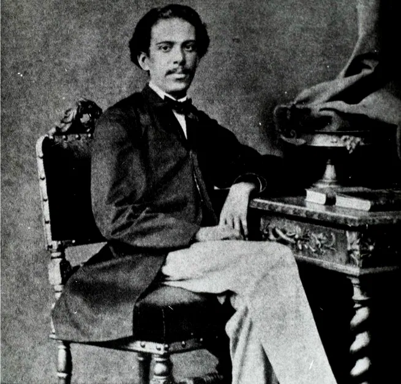
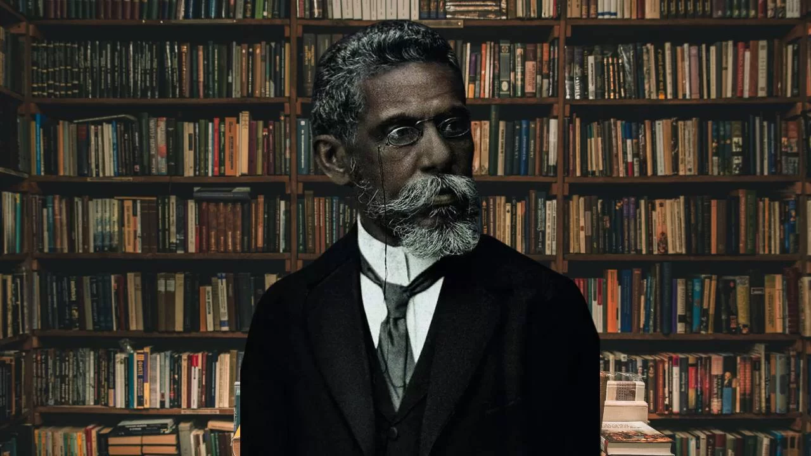
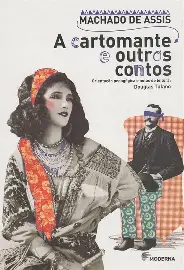

Machado de Assis (Joaquim Maria Machado de Assis) nasceu em 21 de junho de 1839, no Morro do Livramento, Rio de Janeiro. De origem humilde e autodidata, iniciou a carreira literária ainda adolescente, publicando poemas e trabalhando como tipógrafo, revisor e redator. Publicou seu primeiro livro de poesias, Crisálidas, em 1864, e seu primeiro romance, Ressurreição, em 1872. Em 1869, casou-se com Carolina Augusta Xavier de Novais, que o acompanhou e auxiliou por 35 anos. Entre suas obras mais importantes está Memórias Póstumas de Brás Cubas (1881), marco do realismo brasileiro. Foi um dos fundadores da Academia Brasileira de Letras, tornando-se seu presidente em 1897 e permanecendo no cargo por mais de uma década. Após a morte de Carolina, em 1904, escreveu o poema “A Carolina” em sua homenagem. Seu último romance foi Memorial de Aires (1908). Faleceu no Rio de Janeiro, em 29 de setembro de 1908, vítima de câncer.


Machado foi um ávido escritor, produziu diversas obras, dentre romances, peças de teatro, poesias, sonetos, contos, crônicas, críticas e traduções:

Há inúmeras obras — incluindo romances, ensaios, estudos críticos e adaptações — que fazem alusão a Machado de Assis, seja examinando sua produção literária, reinterpretando personagens criados por ele ou estabelecendo diálogos com seus temas. A seguir, alguns exemplos: O Otelo Brasileiro de Machado de Assis – Helen Caldwell Estudo que compara o ciúme de Bentinho (Dom Casmurro) ao de Otelo, de Shakespeare. Capitu: Memórias Póstumas – Domício Proença Filho Romance que revisita Dom Casmurro pela perspectiva de Capitu, discutindo a ambiguidade da personagem. Memórias Desmortas de Brás Cubas – José Roberto Torero Continuação satírica e inventada de Memórias Póstumas de Brás Cubas, mantendo o tom irônico. Machado de Assis: O Homem e a Obra – Lúcia Miguel Pereira Estudo crítico e biográfico que analisa a vida e a produção literária do autor. Machado de Assis: Um Gênio Brasileiro – Daniel Piza Biografia interpretativa que contextualiza Machado na história da literatura e da cultura brasileira.